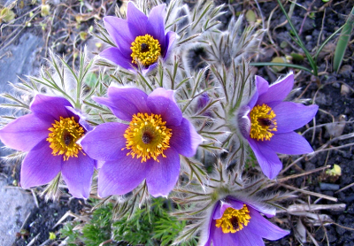
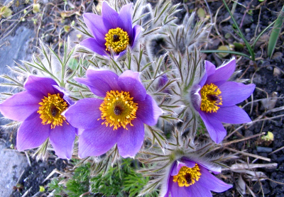

무궁화
한자어로는 槿(근), 木槿(목근), 근화(槿花), 목근화(木槿花)라 한다. 학명은 Hibiscus syriacus(히비스쿠스 시리아쿠스). 그 밖에 순화(舜花), 화노(花奴), 훈화초(薰華草) 등 다양한 명칭으로 불렸다. 꽃말은 그 이름처럼 무궁(다함이 없음).
한반도에서 흔한 특산종이다. 함경도를 제외한 전국, 집 가까이에서 흔히 볼 수 있으며, 울타리나 길 옆에 무더기로 심기도 하고, 한두 그루씩 심기도 한다. 양지 바른 산기슭에서 자생하기도 한다.
꽃을 매화라고 부르는데, 난초(蘭), 국화(菊), 대나무(竹)와 함께 사군자라고 하여 선비의 절개를 상징한다. 이른 봄의 추위를 무릅쓰고 제일 먼저 꽃을 피우는 점 때문이다. 특히 한겨울에 피는 매화는 설중매라고 따로 부르기도 한다. 개화시기는 남부지방은 1~3월, 중부지방은 3~4월이다. 붉은 매화를 홍매(紅梅), 흰 매화를 백매(白梅)라고 하는데, 백매는 종종 벚꽃과 혼동되기도 한다. 실제로는 꽃을 보기만 해도 알 정도로 차이가 상당하지만, 바람 불면 흰 꽃잎이 우수수 날리며 떨어지는 데서 착각을 일으킨다.
봄꽃 중에 화사하기로는 제일이다. 철쭉과 매우 비슷하지만, 독성이 강한 철쭉과 달리 진달래는 식용이 가능하다. 그래도 미량의 독이 있으니 잘못 먹으면 심한 복통에 시달릴 수 있어 주의해야 한다. 독소가 많은 꽃술은 떼어내고 먹어야 한다.
앞에 진열된 꽃 이외에도 정말 여러가지 꽃들이 있습니다. 그 중 극히 적은 수이지만, 같이 봐봅시다 ^-^
 
